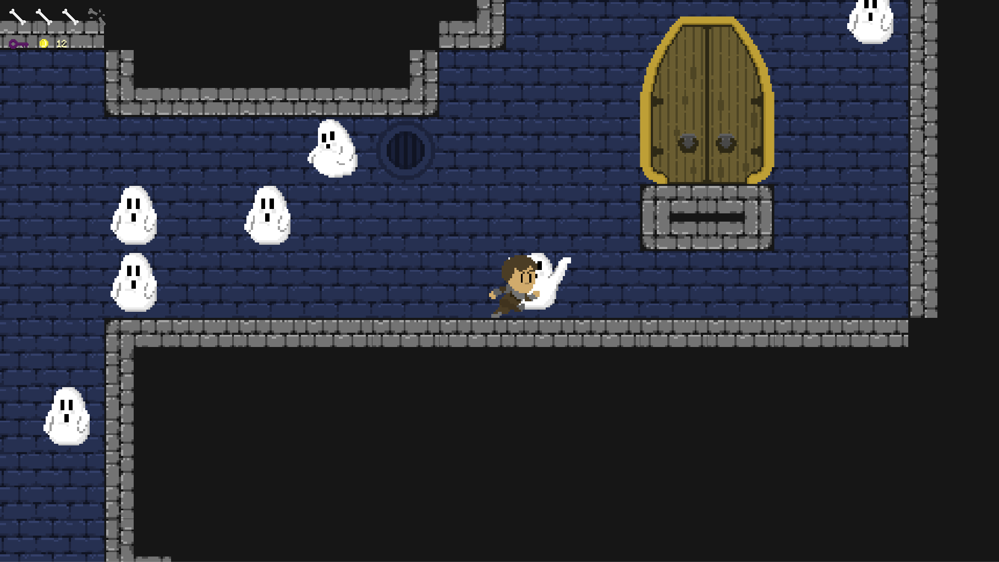
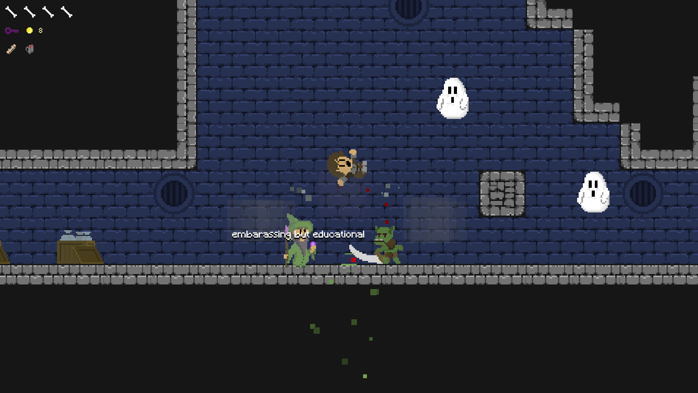

Grungeon is a highly-mobile platformer with rewarding jump mechanics designed to make your trip through the procedurally-generated level as fluid as possible. Use the Friendly Ghosts, or the less friendly Ogres and Goblins, as stepping stones to reach overhangs, or purchase a limited-use jetpack from the Wizard.
Mechanics
Primary actions
Moving: Use 'A' or 'D' to move left or right
Jumping:
Press 'Space' to jump in the air
Secondary actions
Interact: Press 'E' to interact with the shop keeper.
Buying:
Once at a shop, you can buy items using gold.
Splint: Press
'Q' to use the splint item.
Objects
Walls: Can be used to jump off of.
Ghosts: Like walls, you can
jump off of the ghosts.
Orcs: Fast and hart hitting goblins that
will chase you. If the orc falls towards the player from the air, it
will do a ground pound, which does extra damage.
Flying Goblins:
Goblins that fly around and ignore level collisions. You can jump off
of these as well.
Dungeon door: A door that must be found and
unlocked with a key to escape.
Key: Can be collected to unlock
the door.
Gold: Collected from killing enemies.
Splint:
Heals broken bones (health).
Armor: Gives the player extra
protection against enemies.
Jump pack: Allows for vertical travel
at any height. Has limited fuel.
Level Design
The goal of the game is to find the dungeon door and key so you can escape. Every level is procedurally generated so there will always be a different layout. The procedural generation generates a flat ground at the bottom where the player will spawn. From there, three pathways are created: one that leads to the door, one that leads to the key, and one that leads to a dead end. We added one with a dead end so that the player is, initially, uncertain about what the pathways lead to. This puts the player in an explorer mindset as they jump around the level. Since the primary action is jumping, the levels are made up of vertical passage ways, but we used some open spaces and horizontal passage ways to break up repetition. Sometimes the generation creates an area that is impossible to jump so to avoid the player getting stuck, ghosts where added as a simple fix. They spawn in open spaces as an extra jumping platform.
Enemy Design
There were still times when the player would get stuck, so the flying goblins were introduced as a enemy that could be in any position and be jumped off of. The flying goblin can travel through walls and floors so it is usually always present. If the player is careful to not get hit by the goblin, they can use the goblin as a jumping platform. The orc was added as an enemy that would spawn above you and fall down. Since the player spends most of the time jumping upwards, the player needs to be on guard for orcs.
